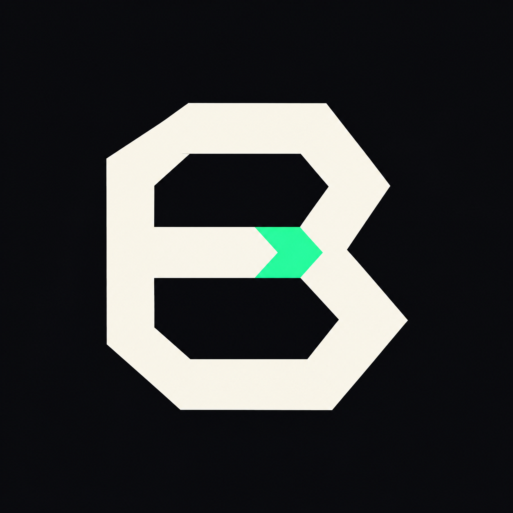

Ballistic — UX proposal, raw greyscale revisionStatic wireframes with sample data. Nothing here is implemented. Chat, the chat/task router, streamed replies, read/approval records and the first-run flow do not exist in the app yet; the model catalogue, Stop, Continue in background, app rules and the separate approval window do. Reasoning and open questions: docs/UX_SYNTHESIS.md. Open with #s1…#s13 or #palette to view one panel alone.
4dp grid: 4 / 8 / 12 / 16. Screen padding 12. Touch targets ≥ 48dp (mockup buttons are drawn smaller for density).
1 Checked what's available
Read: notifications from allowed apps (none)
2 Opened Clock
Why: you asked to open the clock
Outcome: launch accepted
Approvals
None needed
Why I'm asking: this sends a message, and the number didn't come from you or your contacts.
Only your finger on this screen can approve. Ballistic's assistant can't press these buttons. Back denies.
Read
Notifications from allowed apps: none
Did
1 Opened Clock — Android accepted the launch
Approvals
None needed
Checked by
No evidence available
Why I'm asking: this sends a message, and the number didn't come from you or your contacts.
Only your finger on this screen can approve. Ballistic's assistant can't press these buttons. Back denies.